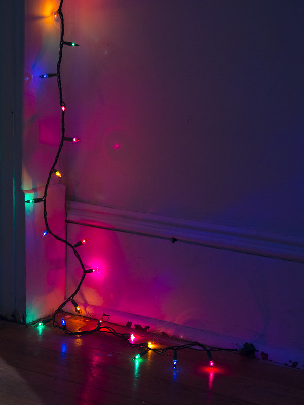

Chapter 2: Adjusting the costume
Previous chapter2 hours later...
When George got back with their dog, Jack and Tim had already dressed up. While Tim was standing in front of the mirror adjusting their wigs, Jack was sitting on the hallway floor wondering whether the makeup was scary enough or whether they should ask their mum for an extra makeup.
"Oh finally!" Jack sighed when George, dressed as dracula, opened the front door. "What took you so long?" Tim asked.
"Buying an outfit for a dog took longer than I thought", George moaned in frustration holding dog dressed as bat. "How was dinner? Did you eat while I was gone?" George asked.
"Yes. But you don't have time to eat now! Otherwise we'll get apples or something when people run out of candy", Jack snapped, stood up and straightened their vampire costume. "Come on, let's go!"
5 minutes later...
"Oh no. Our neighbors were already almost out of candy!", Jack huffs and shoots an angry look at George.
"We could go to Kansas street", George proposes. "They are quite a few houses there and most kids don't go there."
"Yeah because it is too scary!", Tim and Jack states worried look on their face. They won't admit it to their friends but they are actually a little bit afraid of one of the house.
"What's the big deal? You're not afraid of the old lady that lives in that house, are you?", George smirks.
"Of course I'm not!" Tim scoffs but looks still nervous.
"Well let's just go then! Let's get that candy!" George says sounding demanding. They start leading the group towards Kansas street. Tim hesitates for a bit and then sprints after the others.